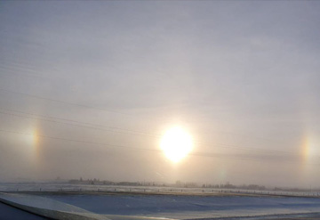
Sun dogs in Calgary
Sundogs are colored spots of light that develop due to the refraction of light through ice crystals. They are located approximately 22 degrees either left, right, or both, from the sun, depending on where the ice crystals are present.
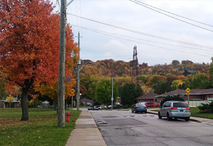
Fall in Hamilton, at the edge of mountain skirt
Hamilton is a Canadian port city on the western tip of Lake Ontario. The Niagara Escarpment, a huge, forested ridge known locally as "the mountain" and dotted with conservation areas and waterfalls, divides the city.
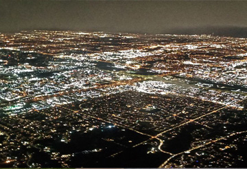
Toronto Night from Top - Airplane
Toronto, the capital of the province of Ontario, is a major Canadian city along Lake Ontario’s northwestern shore. It's a dynamic metropolis with a core of soaring skyscrapers, all dwarfed by the iconic, free-standing CN Tower. Toronto also has many green spaces, from the orderly oval of Queen’s Park to 400-acre High Park and its trails, sports facilities and zoo.
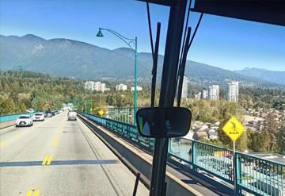
Lion Gate Bridge Vancouver - From a Bus
The Lions Gate Bridge, opened in 1938 and officially known as the First Narrows Bridge, is a suspension bridge that crosses the first narrows of Burrard Inlet and connects the City of Vancouver, British Columbia
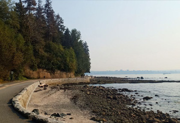
Stanley Park Seawall Path
The 10-km or 13,123-step seawall loop around Stanley Park is Vancouver's most popular fresh-air attraction. The beautiful area now known as Stanley Park was once home to many Indigenous peoples and remains a culturally significant area for the local First Nations people today.
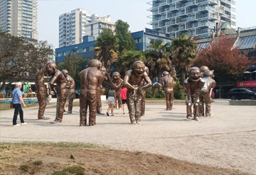
Public Art in Metro Vancouver - "A-maze-ing Laughter"
A-maze-ing Laughter is the most beloved sculpture of the 2009-2011 Vancouver Biennale exhibition, captivating throngs of visitors and inspiring endless playful interaction.
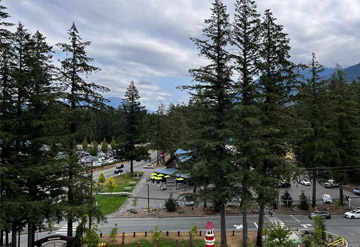
Cultus Lake Adventure Park
"Cultus Lake Adventure Park is BC’s Newest and Best Family Theme Park, featuring 18 Rides and Attractions, including the only Roller Coaster in the Fraser Valley, a Ferris Wheel, an 18-hole Adventure Mini-Golf Course, and Canada’s only fully-inverted pendulum swing ride.
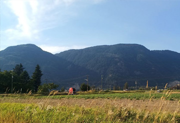
Abbotsford Fraser valley
Abbotsford is a city located in British Columbia, adjacent to the Canada–United States border, Greater Vancouver and the Fraser River. With an estimated population of 153,524 people it is the largest municipality in the province outside metropolitan Vancouver.
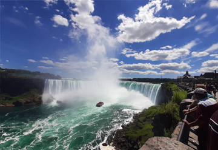
Niagara Falls at the Summer
Niagara Falls, Ontario, is a Canadian city at the famous waterfalls of the same name, linked with the U.S. by the Rainbow Bridge. Its site on the Niagara River's western shore overlooks the Horseshoe Falls, the cascades' most expansive section.
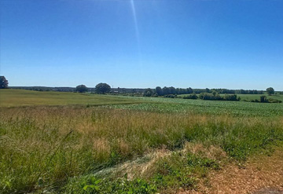
Countryside of Cambridge, Ontario
A countryside or a non-urban area is a region with a minor population density, small settlements, and vast farmland. The City of Cambridge is a thriving, cosmopolitan located in southwestern Ontario
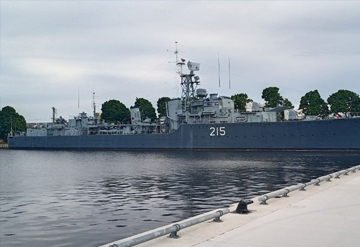
HMCS Haida in Hamilton, Ontario
HMCS Haida is a Tribal-class destroyer that served in the Royal Canadian Navy from 1943 to 1963, participating in World War II and the Korean War. She was named for the Haida people.
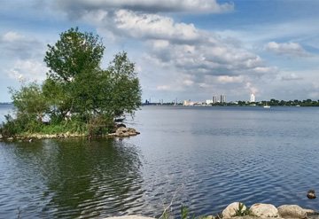
Ontario Lake near Mac Master University, Hamilton
Located on the shores of Lake Ontario, the sand beach is a great spot to lay out your towel and go for a swim this summer season. While you're here, enjoy a walk down the Waterfront Trail or stop by one of the restaurants located within the park.
{kind=link}
{kind=link}
{kind=link}
{kind=link}
{kind=link}
{kind=link}
{kind=link}
{kind=link}
{kind=link}
{kind=link}
{kind=link}
{kind=link}